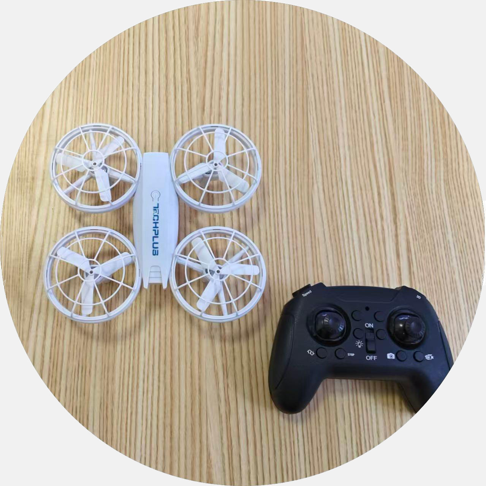
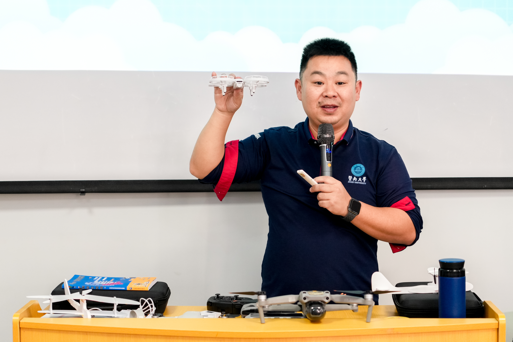
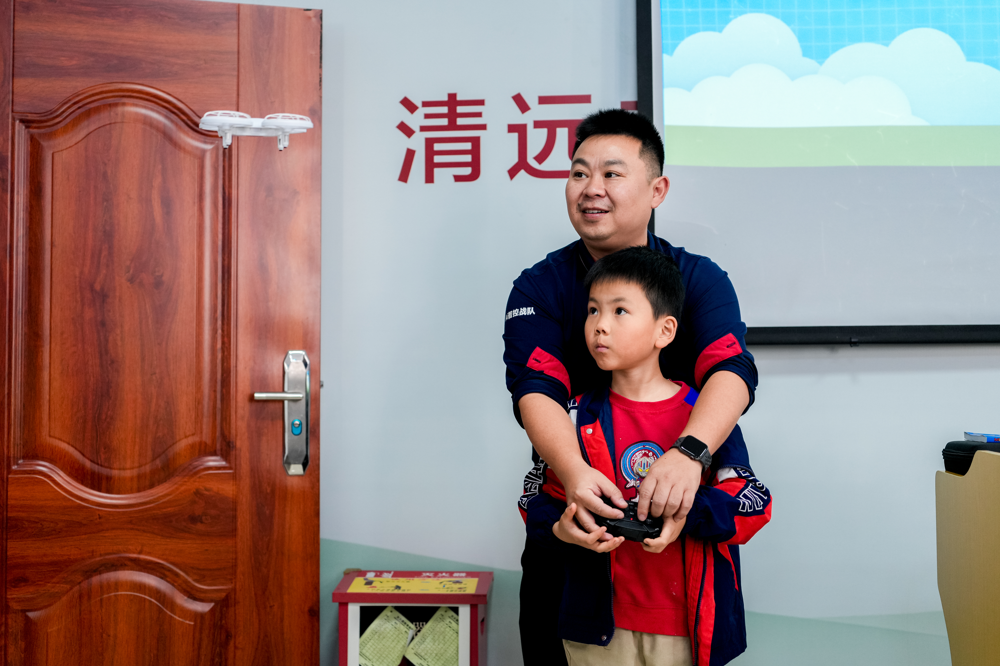
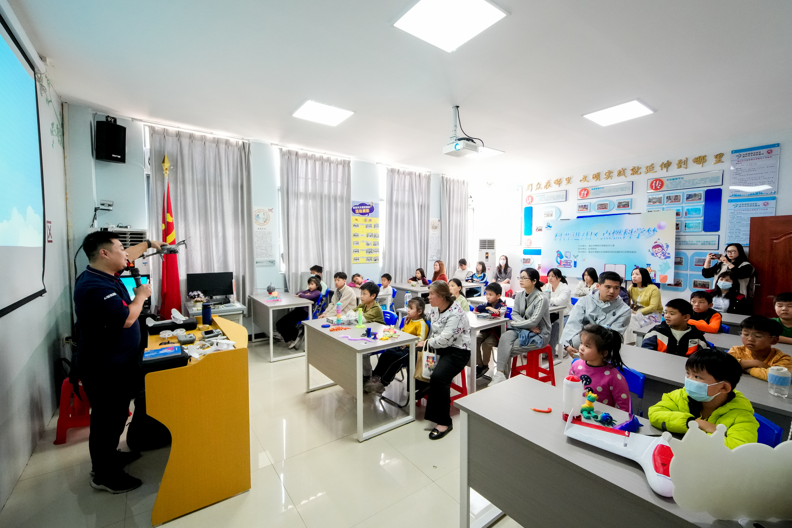

11月23日，“科普进社区 点燃科学梦”无人机科普课堂活动在清新区太和镇西河社区新时代文明实践站举行。活动通过现场授课、互动体验等形式，将无人机等科技知识带到青少年身边，激发科学兴趣，营造崇尚创新、热爱学习的社区氛围。

往前往后往左——是我在给它施魔法吗？不，其实是我在精准操控。”课堂上，一架中型多旋翼无人机平稳升起，活动特邀资深科技导师黄汕以生动比喻拉近了科技与生活的距离，引来孩子们阵阵惊叹。
作为清远市首席技师、中国民航局认证的四类中型多旋翼无人机超视距驾驶员（机长），黄汕围绕无人机的起源、分类、构造及在航拍测绘、应急救援、农业植保等领域的广泛应用展开系统讲解，结合视频与案例，引导孩子们思考科技如何改变社会与生活。

在无人机体验环节，学生们上手操控无人机，从起飞、悬停到穿越障碍，在黄汕的指导下亲身感受飞行原理与遥控技术的魅力。孩子们手握操控杆、紧盯屏幕，全神贯注投入每一次指令执行，现场气氛热烈。
“无人机领域的知识太奇妙了，以后我要学习更多科技技能，实现自己的科技梦想。”参与活动的林同学兴奋地表示。一位陪同参与的家长也感慨道：“这样的体验课不仅让孩子近距离接触了前沿科技，也在动手实践中培养了他们的逻辑思维与空间感知能力，是非常有意义的一课。”

巨劲科技
原报道